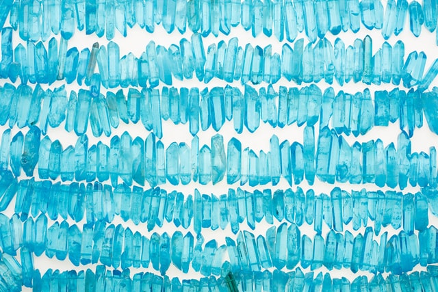

Hypertext Markup Language (HTML) is the standard markup language for creating web pages and web applications.
JTBC 금토드라마 ‘괴물’이 단 2회 만에 뜨거운 반응을 불러일으키고 있다. 빈틈없는 서사에 촘촘히 쌓아 올린 복선과 반전 코드가 시청자들을 단숨에 매료시킨 것. 인물의 복잡한 감정선을 치밀하게 포착한 섬세한 연출과 한 장면도 지나칠 수 없는 짜임새 있는 대본은 심리 추적 스릴러의 진가를 발휘하며 호평을 이끌었다.
‘괴물’은 진실을 좇는 이동식(신하균 분)과 한주원(여진구 분)의 비밀, 만양 사람들의 숨겨진 이야기, 20년 전을 연상케 하는 미스터리한 살인 사건의 실마리가 끊임없이 맞물리며 극강의 흡인력을 선사했다. 무엇보다 얽히고설킨 인물들의 숨겨진 반전은 서스펜스를 극대화했다. 20년 만에 부활한 살인사건은 과거와 얽힌 이들의 비밀을 하나씩 드러내기 시작했다. 알면 알수록 의혹을 증폭시키는 인물들. 누가, 왜, 이토록이나 기이한 만행을 저지른 것인지. 범인은 진짜 이동식인지. 현재의 사건은 과거와 어떤 연관성이 있는지. 살인마의 부활인지, 아니면 모방 범죄일지. 수많은 질문을 던지며 강렬한 포문을 열었다. 단 2회 만에 시청자들의 추리력을 풀가동시킨 ‘괴물’에 뜨거운 관심이 쏠리고 있는 상황. 이에 본격적인 진실 추적을 앞두고 쏟아진 ‘떡밥’들을 짚어봤다.